5040A20 air conditioner compressor - r+r - includes fluid level check and top up if necessary
- Path
- Procedures > 50 AUXILIARY UNITS > 5040 AIR CONDITIONING CASING AND COMPONENTS > 5040A air conditioner coolant circuit > 5040A20 air conditioner compressor - r+r - includes fluid level check and top up if necessary
- Kind
- repair procedure (removal / refitting; the operation number is the code)
- Applies to
- engines: 1.6 TS , 1.8 TS, 2.0 JTS, 2.5 V6, 1.9 JTD 8v , 1.9 JTD 16v, 2.0 JTS, 2.4 JTD 10v, 2.4 JTD 20v; all production periods
- Interactive page
- https://sloeber94.github.io/elrnDB-a156/en/#/3238307
Applies to: all engines; all production periods
Applies to: engines: 1.6 TS , 1.8 TS; all production periods; only with equipment: Air Conditioner
 Removing
Removing
 Refitting
RefittingPlace the vehicle on a lift.
Drain the coolant 5040A10 Air conditioning refrigerant CIRCUIT - Draining and Refilling
1. Undo the bolt securing the compressor outlet and inlet hoses.
2. Disconnect the pipe connectors.
3. Disconnect the electrical connection for the compressor.
 | Name | Connector |
|---|---|---|
3 | Air conditioning compressor "on" electromagnet |
4. Unscrew the nut securing the service belt upper protection.
5. Unscrew the protection retaining bolts.
6. Remove the protection
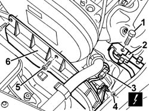
Applies to: engines: 1.6 TS , 1.8 TS; all production periods; only with equipment: Air Conditioner
Raise the car.
7055B54 under-engine guard - r r
Steer the front wheels to the right.
7055B64 Engine compartment DUST shield in front wheel arch (one), left or right - R.R. (right)
1. Slacken service belt tension by turning the mobile tensioner screw anticlockwise.
2. Remove the belt from the compressor pulley.
3. Undo the compressor fixing bolts.
4. Remove the compressor.
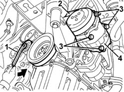
Applies to: engines: 1.6 TS , 1.8 TS; all production periods; only with equipment: Air Conditioner
If replacing the compressor, proceed as follows.
1. Remove the drain plug.
Drain the fluid contained in the compressor. If necessary, rotate the compressor several times, manually, to remove all the fluid.
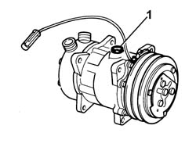
Applies to: engines: 1.6 TS , 1.8 TS; all production periods; only with equipment: Air Conditioner
1. Recover the fluid drained from the compressor in a suitable transparent container (quantity A).
2. Drain and recover the fluid from the new compressor (quantity B) in an identical container, following the instructions given previously.
3. Introduce the same amount of fluid removed from the compressor being replaced into the new compressor (eliminate quantity C = B - A).
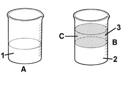
Applies to: engines: 1.6 TS , 1.8 TS; all production periods; only with equipment: Air Conditioner
Refitting
RemovingCheck that the compressor is not damaged.
Refit the compressor and tighten the bolts.
Use a wrench to turn the mobile tensioner anticlockwise and fit the belt.
7055B64 Engine compartment DUST shield in front wheel arch (one), left or right - R.R. (right)
7055B54 under-engine guard - r r
Lower the vehicle.
Fit the upper service belt protection and secure with its bolts and nut.
Connect the compressor hose fittings and tighten the bolt to the specified torque.
 | Fastening | Component | Ø | Value (daNm) |
|---|---|---|---|---|
- | Bolt | COMPRESSOR PIPE CONNECTORS | M10 | 3.2 - 4.6 |
Connect the electrical connection for the compressor.
Repressurize the coolant 5040A10 Air conditioning refrigerant CIRCUIT - Draining and Refilling
Remove the vehicle from the lift.
Check the air conditioning system to ensure it is working. 5040 AIR CONDITIONING CASING AND COMPONENTS
Applies to: all engines; all production periods
Applies to: engines: 2.0 JTS, 2.0 JTS; all production periods; only with equipment: Air Conditioner
Removing
RefittingPosition the vehicle on the ramp.
Ensure that the ignition key is in the OFF position, then disconnect the negative battery terminal (-).
| Name | Connector |
|---|---|---|
- | Battery |
Drain the air conditioner coolant circuit 5040A10 Air conditioning refrigerant CIRCUIT - Draining and Refilling .
Proceed with removal 4450B04 right front wheel r r .
Proceed with removal 7055B54 under-engine guard - r r .
Proceed with removal 1016A40 ignition coil cover on cylinder head- r+r .
1. Undo the bolts (1a), nut (1b) and remove the engine components single drive belt protection (1c).
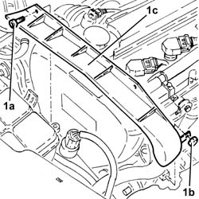
Applies to: engines: 2.0 JTS, 2.0 JTS; all production periods; only with equipment: Air Conditioner
1. Remove the buttons (1a), undo the attachments (1b) and remove the front right wheelarch mudguard (1c).
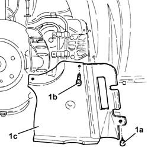
Applies to: engines: 2.0 JTS, 2.0 JTS; all production periods; only with equipment: Air Conditioner
1. Undo the nut (1a) and remove the brackets (1b) securing the power steering pipes.
2. Use a spanner on the moving tensioner (2a) and remove the single drive belt (2b).
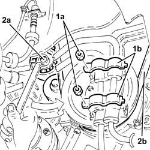
Applies to: engines: 2.0 JTS, 2.0 JTS; all production periods; only with equipment: Air Conditioner
1. Undo the bolt (1a) and disconnect the flange for the inlet/outlet pipes (1b) from the air conditioning compressor.
2. Disconnect the electrical connection for the air conditioning compressor electromagnet coupling.
| Name | Connector |
|---|---|---|
2 | Air conditioning compressor "on" electromagnet |
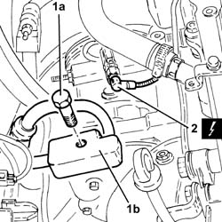
Applies to: engines: 2.0 JTS, 2.0 JTS; all production periods; only with equipment: Air Conditioner
1. Undo the nut (1a) fixing the Lambda sensor electrical connections mounting bracket (1b) to the air conditioning compressor.
2. Undo the upper two bolts fixing the air conditioning compressor to the mounting.
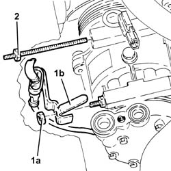
Applies to: engines: 2.0 JTS, 2.0 JTS; all production periods; only with equipment: Air Conditioner
1. Undo the lower two bolts fixing the air conditioning compressor to the mounting.
2. Remove the air conditioning compressor.
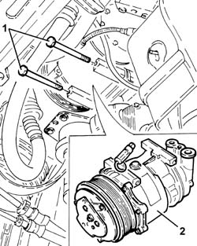
Applies to: engines: 2.0 JTS, 2.0 JTS; all production periods; only with equipment: Air Conditioner
Refitting
RemovingIf the air conditioning compressor is being replaced, proceed as follows.
1. Undo the drain plug.
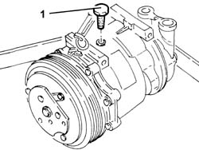
Applies to: engines: 2.0 JTS, 2.0 JTS; all production periods; only with equipment: Air Conditioner
1. Recover the fluid drained from the compressor in a suitable transparent container (quantity A).
2. Drain and recover the fluid from the new compressor (quantity B) in an identical container, following the instructions given previously.
3. Introduce the same amount of fluid removed from the compressor being replaced into the new compressor (eliminate quantity C = B - A).
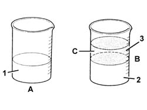
Applies to: engines: 2.0 JTS, 2.0 JTS; all production periods; only with equipment: Air Conditioner
Place the air conditioning compressor back in its housing and secure it tightening the bolts to the recommended torque.
| Fastening | Component | Ø | Value (daNm) |
|---|---|---|---|---|
- | Bolt | AIR CONDITIONER ASSEMBLY COMPRESSOR | M8 | (Support side) 2.3 ÷ 2.8 |
Tighten the nut fixing the Lambda sensor electrical connections mounting bracket to the air conditioning compressor.
1. Connect the electrical connection to the air conditioning compressor electromagnet coupling.
2. Connect the flange for the inlet/outlet pipes (2a) to the air conditioning compressor and secure it by tightening the bolt (2b) to the recommended torque.
| Fastening | Component | Ø | Value (daNm) |
|---|---|---|---|---|
2b | Bolt | FLANGE ON INLET/OUTLET PIPES ON AIR CONDITIONER.COMPRESSOR . | M10 | (Air conditioner compressor side) 3.2 ÷ 3.9 |
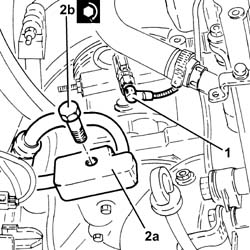
Applies to: engines: 2.0 JTS, 2.0 JTS; all production periods; only with equipment: Air Conditioner
Use a spanner in an anti-clockwise direction on the moving tensioner and fit the engine components single drive belt.
Fit the brackets securing the power steering pipes in their seatings and secure them with their nuts.
Place the right front wheel housing dust protection back in its housing and secure it using the fastenings and buttons.
Refit the engine components single drive belt protection in its seating and secure with its nut and bolts.
Proceed with refitting 1016A40 ignition coil cover on cylinder head- r+r .
Proceed with refitting 7055B54 under-engine guard - r r .
Proceed with refitting 4450B04 right front wheel r r .
Fill the air conditioner coolant circuit 5040A10 Air conditioning refrigerant CIRCUIT - Draining and Refilling .
Connect the negative (-) battery terminal.
Remove the car from the ramps.
Applies to: all engines; all production periods
Applies to: engines: 2.5 V6; all production periods; only with equipment: Air Conditioner
Removing
RefittingPlace the vehicle on a lift.
Drain the coolant 5040A10 Air conditioning refrigerant CIRCUIT - Draining and Refilling
1. Undo bolt (1a) securing bracket (1b) that secures system drain/charge pipes to the front cylinder head.
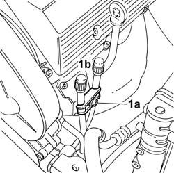
Applies to: engines: 2.5 V6; all production periods; only with equipment: Air Conditioner
1092G10 single engine belt r r
1. Unscrew retaining bolt (1a) and remove hose fittings (1b) from the compressor.
2. Disconnect the electrical connection for the compressor.
| Name | Connector |
|---|---|---|
2 | Air conditioning compressor "on" electromagnet |
3. Unscrew the nuts and remove the through screws.
4. Remove the compressor from its seat.
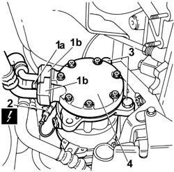
Applies to: engines: 2.5 V6; all production periods; only with equipment: Air Conditioner
If replacing the compressor, proceed as follows.
1. Remove the drain plug.
Drain the fluid contained in the compressor. If necessary, rotate the compressor several times, manually, to remove all the fluid.
Applies to: engines: 2.5 V6; all production periods; only with equipment: Air Conditioner
1. Recover the fluid drained from the compressor in a suitable transparent container (quantity A).
2. Drain and recover the fluid from the new compressor (quantity B) in an identical container, following the instructions given previously.
3. Introduce the same amount of fluid removed from the compressor being replaced into the new compressor (eliminate quantity C = B - A).
Applies to: engines: 2.5 V6; all production periods; only with equipment: Air Conditioner
Refitting
RemovingCheck that the compressor is not damaged.
Refit the compressor, insert the through screws and tighten the nuts to the specified torque.
| Fastening | Component | Ø | Value (daNm) |
|---|---|---|---|---|
- | Nut | AIR CONDITIONER ASSEMBLY COMPRESSOR | M10 | Description 3.35 |
Connect the compressor hose fittings and tighten the bolt to the specified torque.
| Fastening | Component | Ø | Value (daNm) |
|---|---|---|---|---|
- | Bolt | COMPRESSOR PIPE CONNECTORS | M10 | 3.2 - 4.6 |
Connect the electrical connection for the compressor.
Lower the vehicle.
1092G10 single engine belt r r
Secure the charge and drain hoses to the cylinder head.
Repressurize the coolant 5040A10 Air conditioning refrigerant CIRCUIT - Draining and Refilling
Remove the vehicle from the lift.
Check the air conditioning system to ensure it is working. 5040 AIR CONDITIONING CASING AND COMPONENTS
Applies to: all engines; all production periods
Applies to: engines: 1.9 JTD 8v , 1.9 JTD 16v; all production periods; only with equipment: Air Conditioner
Removing
RefittingPlace the vehicle on a lift.
Drain the coolant 5040A10 Air conditioning refrigerant CIRCUIT - Draining and Refilling
Remove the right front wheel.
7055B42 Additional FRONT WHEEL ARCH (one), left or right - R.R. (right)
1092G10 single engine belt r r
5540D10 l/h or r/h fog lamp (one) - r+r (right)
1. Disconnect the electrical connection for the compressor.
| Name | Connector |
|---|---|---|
1 | Air conditioning compressor "on" electromagnet |
2. Unscrew the bolt securing the compressor inlet and outlet hoses.
3. Undo the compressor fixing bolts.
4. Remove the compressor.
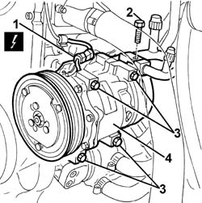
Applies to: engines: 1.9 JTD 8v , 1.9 JTD 16v; all production periods; only with equipment: Air Conditioner
If replacing the compressor, proceed as follows.
1. Remove the drain plug.
Drain the fluid contained in the compressor. If necessary, rotate the compressor several times, manually, to remove all the fluid.
Applies to: engines: 1.9 JTD 8v , 1.9 JTD 16v; all production periods; only with equipment: Air Conditioner
1. Recover the fluid drained from the compressor in a suitable transparent container (quantity A).
2. Drain and recover the fluid from the new compressor (quantity B) in an identical container, following the instructions given previously.
3. Introduce the same amount of fluid removed from the compressor being replaced into the new compressor (eliminate quantity C = B - A).
Applies to: engines: 1.9 JTD 8v , 1.9 JTD 16v; all production periods; only with equipment: Air Conditioner
Refitting
RemovingCheck that the compressor is not damaged.
Refit the compressor and tighten the bolts.
Connect the compressor hose fittings and tighten the bolts to the specified torque.
| Fastening | Component | Ø | Value (daNm) |
|---|---|---|---|---|
- | Bolt | COMPRESSOR PIPE CONNECTORS | M10 | 3.2 - 4.6 |
Connect the electrical connection for the compressor.
5540D10 l/h or r/h fog lamp (one) - r+r (right)
1092G10 single engine belt r r
7055B42 Additional FRONT WHEEL ARCH (one), left or right - R.R. (right)
Fit the right front wheel.
Repressurize the coolant 5040A10 Air conditioning refrigerant CIRCUIT - Draining and Refilling
Remove the vehicle from the lift.
Check the air conditioning system to ensure it is working. 5040 AIR CONDITIONING CASING AND COMPONENTS
Applies to: all engines; all production periods
Applies to: engines: 2.4 JTD 10v; all production periods; only with equipment: Air Conditioner
Removing
RefittingPlace the vehicle on a lift.
Drain the coolant 5040A10 Air conditioning refrigerant CIRCUIT - Draining and Refilling
Remove the right front wheel.
7055B42 Additional FRONT WHEEL ARCH (one), left or right - R.R. (right)
1092G10 single engine belt r r
5540D10 l/h or r/h fog lamp (one) - r+r (right side)
1. Disconnect compressor electrical connections (1a, 1b).
| Name | Connector |
|---|---|---|
1a | Air conditioning compressor "on" electromagnet |
| Name | Connector |
|---|---|---|
1b | Compressor "off" switch |
2. Undo the outlet hose bolts.
3. Disconnect the outlet hose fitting.
4. Undo the upper compressor bolts without removing from their holes.
5. Undo the inlet hose bolt.
6. Disconnect the inlet hose fitting.
7. Undo the lower compressor bolts without removing from their holes.
8. Remove the compressor with the bolts.
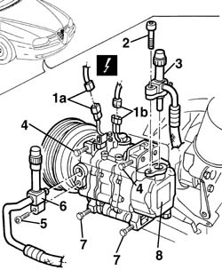
Applies to: engines: 2.4 JTD 10v; all production periods; only with equipment: Air Conditioner
If replacing the compressor, proceed as follows.
1. Remove the oil separator for the compressor being replaced.
2. Drain the fluid contained in the compressor. If necessary, rotate the compressor several times, manually, to remove all the fluid.
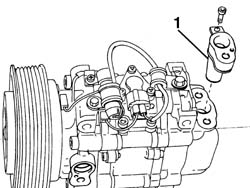
Applies to: engines: 2.4 JTD 10v; all production periods; only with equipment: Air Conditioner
1. Recover the fluid drained from the compressor in a suitable transparent container (quantity A).
2. Drain and recover the fluid from the new compressor (quantity B) in an identical container, following the instructions given previously.
3. Introduce the same amount of fluid removed from the compressor being replaced into the new compressor (eliminate quantity C = B - A).
Applies to: engines: 2.4 JTD 10v; all production periods; only with equipment: Air Conditioner
Refitting
RemovingCheck that the compressor is not damaged.
Refit the compressor with the bolts fitted into the holes.
Tighten the bolts fixing the compressor.
Connect the compressor pipe fittings and tighten the bolts.
| Fastening | Component | Ø | Value (daNm) |
|---|---|---|---|---|
- | Bolt | COMPRESSOR PIPE CONNECTORS | M6 | 0.9 - 1.2 |
Connect the electrical connections for the compressor.
5540D10 l/h or r/h fog lamp (one) - r+r
1092G10 single engine belt r r
7055B42 Additional FRONT WHEEL ARCH (one), left or right - R.R.
Fit the right front wheel.
Repressurize the coolant 5040A10 Air conditioning refrigerant CIRCUIT - Draining and Refilling
Remove the vehicle from the lift.
Check the air conditioning system to ensure it is working. 5040 AIR CONDITIONING CASING AND COMPONENTS
Applies to: all engines; all production periods
Applies to: engines: 2.4 JTD 20v; all production periods; only with equipment: Air Conditioner
Removing
RefittingPlace the vehicle on a lift.
Drain the coolant ( 5040A10 Air conditioning refrigerant CIRCUIT - Draining and Refilling ).
7055B42 Additional FRONT WHEEL ARCH (one), left or right - R.R. (right)
7055B64 Engine compartment DUST shield in front wheel arch (one), left or right - R.R. (right)
7055B54 under-engine guard - r r
1092G10 single engine belt r r
1. Disconnect the electrical connection.
| Name | Connector |
|---|---|---|
1 | Air conditioning compressor "on" electromagnet |
2. Undo the bolts and disconnect the connectors for the inlet and outlet pipes from the compressor.
3. Undo the upper compressor fixing bolt.
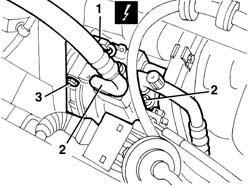
Applies to: engines: 2.4 JTD 20v; all production periods; only with equipment: Air Conditioner
1. Undo the lower compressor fixing bolts.
2. Remove the compressor.
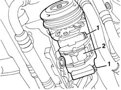
Applies to: engines: 2.4 JTD 20v; all production periods; only with equipment: Air Conditioner
If replacing the compressor, proceed as follows.
1. Drain the fluid contained in the compressor throught the openings connected to the pipes. If necessary, rotate the compressor several times and rotate the pulley, manually, to remove all the fluid.
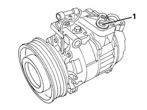
Applies to: engines: 2.4 JTD 20v; all production periods; only with equipment: Air Conditioner
1. Recover the fluid drained from the compressor in a suitable transparent container (quantity A).
2. Drain and recover the fluid from the new compressor (quantity B) in an identical container, following the instructions given previously.
3. Introduce the same amount of fluid removed from the compressor being replaced into the new compressor (eliminate quantity C = B - A).
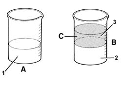
Applies to: engines: 2.4 JTD 20v; all production periods; only with equipment: Air Conditioner
Refitting
RemovingCheck that the compressor is not damaged.
Reposition the compressor.
Tighten the bolts fixing the compressor.
Connect the electrical connection.
Connect the connectors for the pipes to the compressor and secure them by tightening the bolts to the recommended torque.
| Fastening | Component | Ø | Value (daNm) |
|---|---|---|---|---|
- | Bolt | COOLANT SYSTEM FITTINGS | M8 | 1.3 |
1092G10 single engine belt r r
7055B54 under-engine guard - r r
7055B64 Engine compartment DUST shield in front wheel arch (one), left or right - R.R. (right)
7055B42 Additional FRONT WHEEL ARCH (one), left or right - R.R. (right)
Repressurize using coolant fluid ( 5040A10 Air conditioning refrigerant CIRCUIT - Draining and Refilling ).
Remove the vehicle from the lift.
Topics linked from this page (13)
- 1016A40 ignition coil cover on cylinder head- r+r
- 1092G10 single engine belt r r
- 4450B04 right front wheel r r
- 5040 AIR CONDITIONING CASING AND COMPONENTS
- 5040A air conditioner coolant circuit
- 5040A10 Air conditioning refrigerant CIRCUIT - Draining and Refilling
- 5540D10 l/h or r/h fog lamp (one) - r+r
- 7055B42 Additional FRONT WHEEL ARCH (one), left or right - R.R.
- 7055B54 under-engine guard - r r
- 7055B64 Engine compartment DUST shield in front wheel arch (one), left or right - R.R.
- A1B Battery ( BATTERY NEGATIVE )
- I60 Compressor "off" switch
- L20 Air conditioning compressor "on" electromagnet
Topics that link to this page (27)
- L10 CLIMATE CONTROL NOT COOLING
- S10 ENGINE WHILSTLING / SERVICES BELT NOISY'
- S50 CLIMATE CONTROL SYSTEM NOISY' / (IN THE ENGINE COMPARTMENT)
- 1008A44 rear rigid mount - r r
- 1008A46 cam shaft left rigid mount - r r
- 1016C10 cylinder head - r + r and replace gasket
- 1020A20 crank case oil sump - r + r clean seals for sealant application
- 1020D10 front crank shaft oil seal cover - r + r and replace seals with timing belt removed
- 1020D15 Crankshaft oil seal FRONT COVER - R.R. and Replace. gaskets on engines with oil pump on crankshaft and heat exchanger
- 1020D36 flywheel end oil seal - replace for manual gearbox with hydraulic selection versions
- 1020D38 flywheel side oil seal - replace
- 1024B10 engine flywheel - r + r for versions with manual gearbox
- 1024B11 engine flywheel - r r for manual gearbox with hydraulic selection versions
- 1028H10 connecting rod and piston set - r r
- 1076B10 exhaust pipe assembly - r + r
- 1076B34 front catalytic converter attachment seal - replace
- 1080B62 catalytic converter - r + r
- 1084B26 emgine oil intake duct - r r
- 1088D24 rigid pipe for coolant inlet to water pump - r + r
- 1088D26 rigid intake pipe to water pump - r+r for versions with a/c
- 1810A20 clutch - r + r
- 1810A28 clutch - r r for manual gearbox with hydraulic selection versions
- 2110A10 manual gearbox and differential - r + r
- 2110A11 manual gearbox with differential - r r for versions with hydraulic selection
- 2110C24 seals for gearbox input shaft - r r for manual gearbox with hydraulic selection versions
- 4130B40 outlet pipe from pump to power steering case r r
- 5040A26 compressor mount - r r